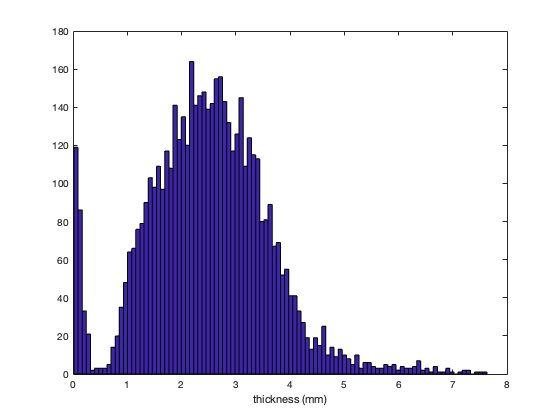
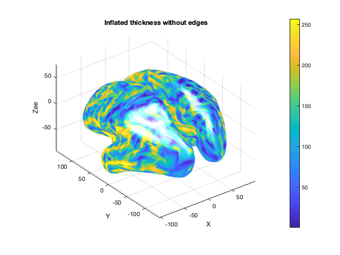
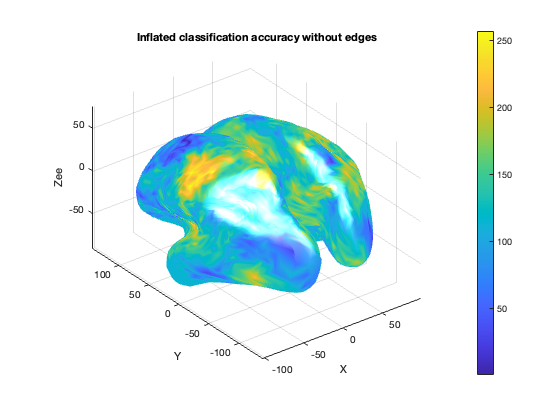

Demo: fMRI surface-based searchlights with LDA classifier
The data used here is available from http://cosmomvpa.org/datadb.zip
This example uses the following dataset: + 'digit' A participant made finger pressed with the index and middle finger of the right hand during 4 runs in an fMRI study. Each run was divided in 4 blocks with presses of each finger and analyzed with the GLM, resulting in 2*4*4=32 t-values
A searchlight is run with a 100 voxel searchlight, using a disc for which the metric radius varies from node to node.
This example requires the surfing toolbox, github.com/nno/surfing
This example may take quite some time to run. For faster execution but lower spatial precision, set ld=16 below; for slower execution use ld=64.
If you use this code for a publication, please cite: Oosterhof, N.N., Wiestler, T, Downing, P.E., & Diedrichsen, J. (2011) A comparison of volume-based and surface-based information mapping. Neuroimage. DOI:10.1016/j.neuroimage.2010.04.270
- For CoSMoMVPA's copyright information and license terms, #
- see the COPYING file distributed with CoSMoMVPA. #
Contents
Check externals
cosmo_check_external('surfing'); cosmo_check_external('afni');
Set data paths
The function cosmo_config() returns a struct containing paths to tutorial data. (Alternatively the paths can be set manually without using cosmo_config.)
config = cosmo_config(); digit_study_path = fullfile(config.tutorial_data_path, 'digit'); readme_fn = fullfile(digit_study_path, 'README'); cosmo_type(readme_fn); output_path = config.output_data_path;
Overview
--------
fMRI responses to a human participant pressing buttons with the index and middle finger.
Contents
--------
- glm_T_stats_allruns+orig.{BRIK,HEAD}:
t-statistics associated with finger presses.
There are 4 runs, each with 4 blocks.
Each block has two t-statistics, one for each of button presses for the
index and middle finger (in that order).
- epi+orig.{HEAD,BRIK}:
A single EPI image.
- icoXX_mh.YY.asc:
Surface anatomy meshes of two hemispheres with standard topology, generated
using AFNI SUMA's MapIcosahedron. Left and right hemisphere surfaces were
merged in the order left, right; the first half of the nodes and faces refer
to the left hemisphere, the second half to the right hemisphere.
XX={16,64} is the number of linear divisions of MapIcosahedron; surfaces
have (XX^2)*10+2 nodes and XX^2*20 faces in each hemisphere.
YY={pial_al,white_al} are the outer and inner surfaces around the grey matter
generated by FreeSurfer. YY=intermediate_al is the node-wise average of the
pial and white surfaces; this surface can be used for single-surface
analyses when surfaces are generated using Caret or BrainVoyager
YY=inflated_alCoMmedial are inflated surfaces with the center of mass
along the medial side of the two hemispheres. These surfaces are suitable
for visualization purposes.
Methods
-------
This dataset contains data from a fingerpress experiment where a participant
(28y right-handed male) pressed buttons on a box with the index and middle
finger of the right hand while fMRI volumes were acquired. Over four runs, in
total sixteen blocks of 72s finger presses were acquired; in each block the
participant pressed the index and middle finger during different `mini-blocks'
of 8 s each. Each block was preceded and followed by a 16s rest period.
Functional data was preprocessed in AFNI with despiking, time slice correction,
motion correction, and scaling to percent signal change by dividing the signal
for each volume by the mean of the run. No spatial smoothing or interpolation
was applied to the functional data, except for interpolation during motion
correction. The preprocessed data was analyzed with a general linear model
(GLM) with separate regressors for each finger and each block (and some
regressors of no interest) to obtain t-values for each finger in each block.
License
-------
The contents are made available by Nikolaas N. Oosterhof <nikolaas.oosterhof
|at| unitn.it> under the Creative Commons CC0 1.0 Universal Public Domain
Dedication ("CC0"). See the LICENSE file for details, or visit
http://creativecommons.org/publicdomain/zero/1.0/deed.en.
Contact
-------
Nikolaas N. Oosterhof <nikolaas.oosterhof |at| unitn.it>
% resolution parameter for input surfaces % 64 is for high-quality results; use 16 for fast execution surface_ld = 16; % Define twin surface filenames (FreeSurfer) pial_fn = fullfile(digit_study_path, ... sprintf('ico%d_mh.pial_al.asc', surface_ld)); white_fn = fullfile(digit_study_path, ... sprintf('ico%d_mh.smoothwm_al.asc', surface_ld)); % read the surface in pial_fn using surfing_read, and assign the vertices % and faces to variables pial_v and pial_f, respectively % >@@> [pial_v, pial_f] = surfing_read(pial_fn); % <@@< fprintf('The pial surface has %d vertices, %d faces\n', ... size(pial_v, 1), size(pial_f, 1)); % do the same for the white_fn, assign the faces and vertices to % white_v and white_f % >@@> [white_v, white_f] = surfing_read(white_fn); % <@@< fprintf('The white surface has %d vertices, %d faces\n', ... size(pial_v, 1), size(pial_f, 1)); % verify that the face information in pial_f and white_f are the same assert(isequal(white_f, pial_f)); % show the content of the surfaces fprintf('pial_v\n'); cosmo_disp(pial_v); fprintf('pial_f\n'); cosmo_disp(pial_f); fprintf('white_v\n'); cosmo_disp(white_v); fprintf('white_f\n'); cosmo_disp(white_f);
The pial surface has 5124 vertices, 10240 faces
The white surface has 5124 vertices, 10240 faces
pial_v
[ -32.3 19.8 41.4
-33.9 37.9 114
-27.9 -16.3 112
: : :
59.2 1.4 64.1
50.2 0.804 72.3
56.1 5.38 70.6 ]@5124x3
pial_f
[ 43 1 13
58 43 13
43 58 44
: : :
4.9e+03 5.12e+03 4.55e+03
4.9e+03 4.9e+03 5.12e+03
4.55e+03 2.57e+03 4.9e+03 ]@10240x3
white_v
[ -36.4 23.6 38.6
-33.5 36.9 112
-27.5 -14.4 111
: : :
56.3 1.56 63.7
48.9 2.18 69.1
53.9 5.02 67.9 ]@5124x3
white_f
[ 43 1 13
58 43 13
43 58 44
: : :
4.9e+03 5.12e+03 4.55e+03
4.9e+03 4.9e+03 5.12e+03
4.55e+03 2.57e+03 4.9e+03 ]@10240x3
Part 1: compute thickness of the cortex
% compute the element-wise difference in coordinates between pial_v % and white_v, and assign to a variable delta % >@@> delta = pial_v - white_v; % <@@< % square the differences element-wise, and assign to delta_squared. % hint: use ".^2" % >@@> delta_squared = delta.^2; % <@@< % compute the thickness squared, by summing the elements in % delta_squared along the second dimension. Assign to thickness_squared % >@@> thickness_squared = sum(delta_squared, 2); % <@@< % finally compute the thickness by taking the square root, assign % the result to thickness % >@@> thickness = sqrt(thickness_squared); % <@@<
plot a histogram of the thickness values >@@>
hist(thickness, 100); xlabel('thickness (mm)'); % <@@<
For visualization purposes, read inflated surface
inflated_fn = fullfile(digit_study_path, ... sprintf('ico%d_mh.inflated_alCoMmedial.asc', surface_ld)); [infl_v, infl_f] = surfing_read(inflated_fn); fprintf('The inflated surface has %d vertices, %d faces\n', ... size(infl_v, 1), size(infl_f, 1));
The inflated surface has 5124 vertices, 10240 faces
visualize surface in Matlab using AFNI Matlab toolbox
nvertices = size(infl_v, 1); min_thickness = 1; max_thickness = 4; show_edge = false; opt = struct(); opt.ShowEdge = show_edge; opt.Zlim = [min_thickness, max_thickness]; % this does not seem to work opt.Dim = '3D'; if show_edge t = 'with edges'; else t = 'without edges'; end desc = 'thickness'; header = strrep([desc ' ' t], '_', ' '); range_adj_thickness = max(min_thickness, ... min(thickness, max_thickness)); DispIVSurf(infl_v, infl_f, 1:nvertices, ... range_adj_thickness, 0, opt); title(sprintf('Inflated %s', header));
DispIVSurf verbose: z-buffer mode. DispIVSurf verbose: Scaling ITvect to fit colormap DispIVSurf verbose: Set hold to off DispIVSurf verbose: Drawing Patches DispIVSurf verbose: Applied interp for Shade. DispIVSurf verbose: Set Edgecolor to none DispIVSurf verbose: Set view to 3D DispIVSurf verbose: Displaying colormap DispIVSurf verbose: Setting Axes properties DispIVSurf verbose: Done
ds_thickness = struct();
ds_thickness.fa.node_indices = 1:nvertices;
ds_thickness.samples = thickness(:)';
ds_thickness.a.fdim.labels = {'node_indices'};
ds_thickness.a.fdim.values = {(1:nvertices)'};
% July 2019: strangely enough these gifti files cannot be read by AFNI SUMA.
% https://github.com/CoSMoMVPA/CoSMoMVPA/issues/186
if cosmo_check_external('gifti', false)
output_fn = fullfile(config.output_data_path, 'thickness.gii');
cosmo_map2surface(ds_thickness, output_fn, 'encoding', 'ASCII');
end
% AFNI output
output_fn = fullfile(config.output_data_path, 'thickness.niml.dset');
cosmo_map2surface(ds_thickness, output_fn);
Part 2: run surface-based searchlight
% Load volumetric functional data data_path = digit_study_path; data_fn = fullfile(data_path, 'glm_T_stats_perblock+orig'); % set targets targets = repmat(1:2, 1, 16)'; % class labels: 1 2 1 2 1 2 1 2 1 2 ... 1 2 chunks = floor(((1:32) - 1) / 8) + 1; % run labels: 1 1 1 1 1 1 1 1 2 2 ... 4 4 % load functional data ds = cosmo_fmri_dataset(data_fn, 'targets', targets, 'chunks', chunks); % remove zero elements zero_msk = all(ds.samples == 0, 1); ds = cosmo_slice(ds, ~zero_msk, 2); fprintf('Dataset has %d samples and %d features\n', size(ds.samples)); % print dataset fprintf('Dataset input:\n'); cosmo_disp(ds);
Dataset has 32 samples and 168097 features
Dataset input:
.sa
.labels
{ 'fi_i_R1_B01#0_Tstat'
'fi_m_R1_B01#0_Tstat'
'fi_i_R1_B02#0_Tstat'
:
'fi_m_R4_B03#0_Tstat'
'fi_i_R4_B04#0_Tstat'
'fi_m_R4_B04#0_Tstat' }@32x1
.stats
{ 'Ttest(168)'
'Ttest(168)'
'Ttest(168)'
:
'Ttest(168)'
'Ttest(168)'
'Ttest(168)' }@32x1
.targets
[ 1
2
1
:
2
1
2 ]@32x1
.chunks
[ 1
1
1
:
4
4
4 ]@32x1
.a
.vol
.mat
[ -2.5 0 0 71.2
0 -2.5 0 112
0 0 2.5 43
0 0 0 1 ]
.dim
[ 61 84 41 ]
.xform
'scanner_anat'
.fdim
.labels
{ 'i'
'j'
'k' }
.values
{ [ 1 2 3 ... 59 60 61 ]@1x61
[ 1 2 3 ... 82 83 84 ]@1x84
[ 1 2 3 ... 39 40 41 ]@1x41 }
.samples
[ 0 0 0 ... -0.878 0.178 4.66
0 0 0 ... 2.48 -0.3 1.12
0 0 0 ... -1.05 -0.707 1.04
: : : : : :
-2.21 -0.243 -0.377 ... -1.59 1 0.987
-1.97 1.06 0.673 ... -1.23 1.41 0.999
-4.5 1.16 1.53 ... 1.86 -1.31 0.405 ]@32x168097
.fa
.i
[ 1 2 3 ... 59 60 61 ]@1x168097
.j
[ 1 1 1 ... 84 84 84 ]@1x168097
.k
[ 3 3 3 ... 36 36 36 ]@1x168097
set measure arguments
Assign to measure a function handle to cosmo_cross_validation_measure >@@>
measure = @cosmo_crossvalidation_measure; % <@@< % use as arguments for the measure: % - classifier: cosmo_classify_naive_bayes % - partitions: odd-even partitions % assign these to a struct measure_args % >@@> measure_args = struct(); measure_args.classifier = @cosmo_classify_naive_bayes; measure_args.partitions = cosmo_oddeven_partitioner(ds); % <@@<
Set neighborhood parameters Make a cell with the outer surface vertices (pial_v), the inner surface vertices (white_v), and the face indices (pial_f or white_f). Assign to a variable surface_def >@@>
surface_def = {pial_v, white_v, pial_f};
% <@@<
% Define a surface-based neighborhood (using cosmo_surficial_neighborhood)
% with approximately 100 voxels per searchlight. Assign the result
% to nbrhood.
% Note: if you have issues compiling the fast marching toolbox,
% you could alternatively (with little loss of precision / change in
% results) add as additional arguments: 'metric','dijkstra'
% >@@>
nbrhood = cosmo_surficial_neighborhood(ds, surface_def, ...
'count', 100, ...
'metric', 'dijkstra');
% <@@<
% visualize the neighborhood using cosmo_disp.
% What is the feature attribute of the neighborhood?
Warning: found 911 / 5124 center nodes outside the volume, these will be ignored. Using 168097 / 210084 voxels in functional volume mask +00:00:04 [####################] -00:00:00 r=22.97, 100.0 vox
run surface-based searchlight using the variables define above Assign the result to ds_sl >@@>
ds_sl = cosmo_searchlight(ds, nbrhood, measure, measure_args);
% <@@<
+00:00:01 [####################] -00:00:00
plot surface in Matlab using AFNI Matlab toolbox
nvertices = size(infl_v, 1); show_edge = false; opt = struct(); opt.ShowEdge = show_edge; opt.Dim = '3D'; if show_edge t = 'with edges'; else t = 'without edges'; end desc = 'classification accuracy'; header = strrep([desc ' ' t], '_', ' '); DispIVSurf(infl_v, infl_f, 1:nvertices, ... ds_sl.samples', 0, opt); title(sprintf('Inflated %s', header)); % July 2019: strangely enough these gifti files cannot be read by AFNI SUMA. % https://github.com/CoSMoMVPA/CoSMoMVPA/issues/186 if cosmo_check_external('gifti', false) output_fn = fullfile(config.output_data_path, 'digit_accuracy.gii'); cosmo_map2surface(ds_sl, output_fn, 'encoding', 'ASCII'); end % AFNI output output_fn = fullfile(config.output_data_path, 'digit_accuracy.niml.dset'); cosmo_map2surface(ds_sl, output_fn); % Show citation information cosmo_check_external('-cite');
DispIVSurf verbose: z-buffer mode. DispIVSurf verbose: Scaling ITvect to fit colormap DispIVSurf verbose: Set hold to off DispIVSurf verbose: Drawing Patches DispIVSurf verbose: Applied interp for Shade. DispIVSurf verbose: Set Edgecolor to none DispIVSurf verbose: Set view to 3D DispIVSurf verbose: Displaying colormap DispIVSurf verbose: Setting Axes properties DispIVSurf verbose: Done If you use CoSMoMVPA and/or some other toolboxes for a publication, please cite: Z. Saad, G. Chen. AFNI Matlab library. available online from https://github.com/afni/AFNI N. N. Oosterhof, T. Wiestler, J. Diedrichsen (2011). A comparison of volume-based and surface-based multi-voxel pattern analysis. Neuroimage 56 (2), 593-600. Surfing toolbox available online from http://github.com/nno/surfing N. N. Oosterhof, A. C. Connolly, J. V. Haxby (2016). CoSMoMVPA: multi-modal multivariate pattern analysis of neuroimaging data in Matlab / GNU Octave. Frontiers in Neuroinformatics, doi:10.3389/fninf.2016.00027.. CoSMoMVPA toolbox available online from http://cosmomvpa.org The Mathworks, Natick, MA, United States. Matlab 24.1.0.2537033 (R2024a) (February 21, 2024). available online from http://www.mathworks.com